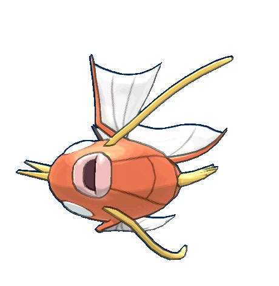

Groowlithe
TIPO


Magikarp es un Pokémon de tipo Agua introducido en la primera generación de juegos de Pokémon. Aunque en su estado básico puede parecer débil e inútil en combate, Magikarp es conocido por su potencial de evolución y su papel en la cultura Pokémon.